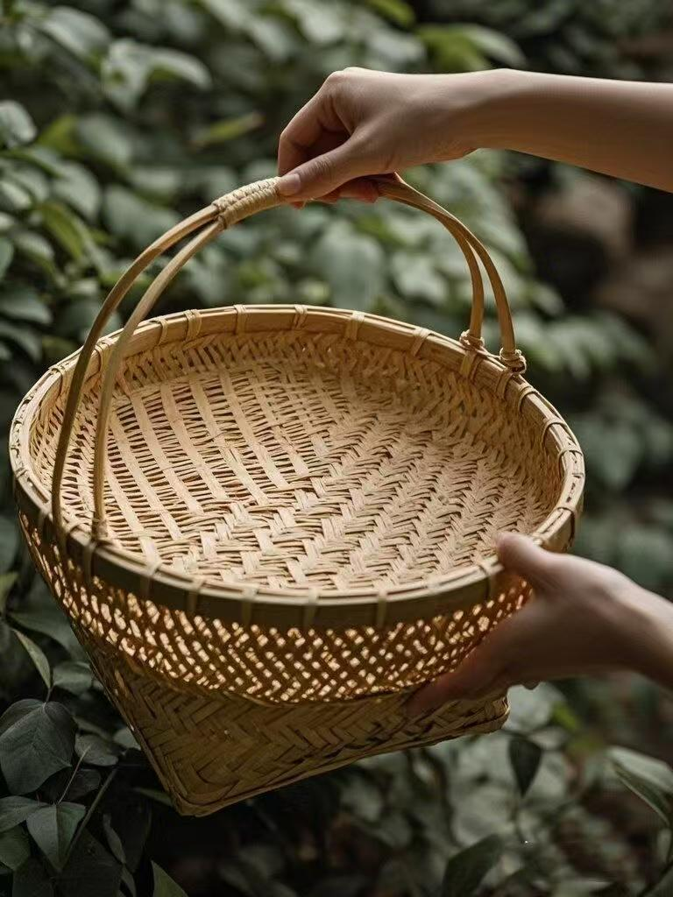

竹篮
竹篮，作为中华民族传统竹编技艺的经典产物，承载着千年的生活智慧与文化记忆。从田间地头的劳作工具到雅致案头的装饰器物，竹篮以其独特的实用性与艺术性，在历史长河中始终占据着不可或缺的位置。
竹篮的制作工艺源远流长，凝聚着匠人的精湛技艺。选材是第一步，需挑选生长三至五年、质地坚韧的竹子，如楠竹、毛竹等。随后进入加工环节，匠人凭借娴熟的刀法，将竹子破成竹条，再层层剖篾，把粗壮的竹条变成薄如蝉翼、细若发丝的竹篾。编织过程最为关键，以篮底为起点，匠人运用十字编、人字编、绞丝编等技法，将竹篾交错编织，紧密的编织纹路不仅赋予竹篮稳固的结构，还能防止物品滑落。编织篮身时，根据用途与造型需求，通过增减竹篾、调整编织角度塑造出不同形态。待主体成型，还要精心制作篮柄，或弯曲成优雅的弧形，或编织成结实的双股，最后用细密的竹丝进行锁边加固，确保竹篮经久耐用。每一道工序都依赖手工完成，匠人们凭借手感与经验把控力度和角度，让平凡的竹子蜕变为实用的竹篮。
竹篮的种类丰富多样，因用途而生，各具特色。日常生活中，菜篮是最为常见的竹篮之一。它通常呈圆形或椭圆形，敞口设计方便取放物品，宽大的篮身能容纳一日所需的蔬菜瓜果，透气的编织结构可避免食材因闷热而腐烂，底部与篮身紧密编织，结实耐用，无论是穿梭于菜市场，还是在田间采摘蔬果，都能轻松胜任。收纳篮也是家庭中的好帮手，其造型简洁规整，有的还设计有分层结构，适用于整理杂物、存放衣物，将零散的物品收纳得井井有条，让空间更显整洁有序。